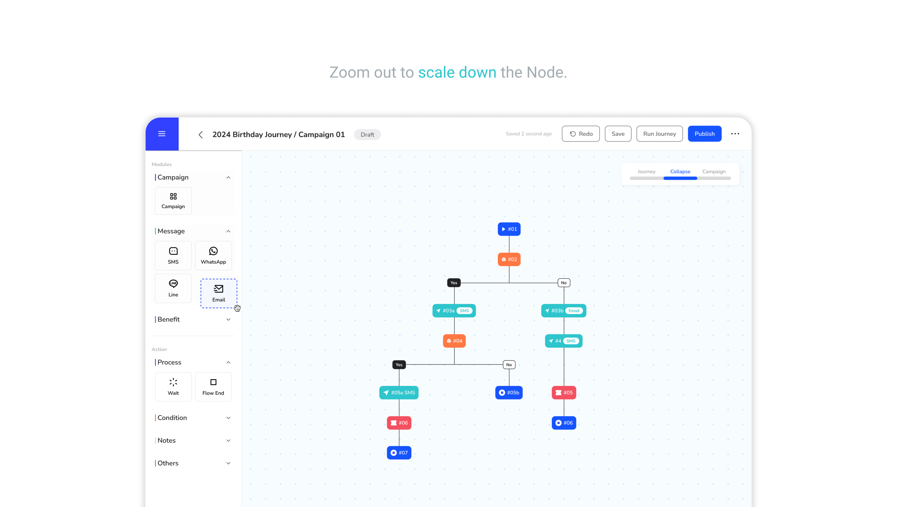

Interaction challenge 01
Keep large journeys readable.
- Challenge
- A journey could grow towards 50 nodes, making its structure harder to scan.
- Design decision
- Use consistent colour semantics to distinguish triggers, conditions, actions and waits.
- Why it mattered
- Users could recognise the journey structure before reading every node.

Development media placeholder
Large journey · Colour-coded node structure